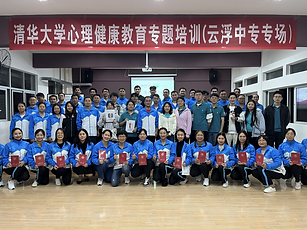
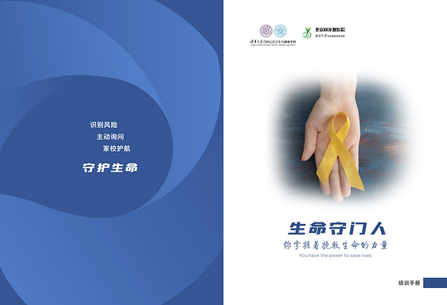

Life Gatekeeper training


Project leaders
Diyang Qu
Overview
Adolescent suicide is a significant concern in China that has often been overlooked. In response, our project focuses on the implementation of the Life Gatekeeper program, designed to equip school teachers with the necessary skills to act as life gatekeepers for students facing challenges. This pioneering program, the first of its kind in China, includes digital-delivered components tailored for both primary and secondary school instructors.
The Life Gatekeeper program aims to enhance teachers' literacy, beliefs, skills, willingness to intervene, and perceived competence in dealing with students at risk of suicide. The program emphasizes practicality by placing a strong emphasis on skill acquisition and practice. Participants have instant access to all program materials, including video clips and workbooks, through an online platform, allowing them to retrieve resources at any time and from any location.
By advancing the field of suicide prevention and intervention study in China, the Life Gatekeeper program holds the potential to generate valuable evidence-based practices and policy benefits for relevant stakeholders. Ultimately, it aims to establish a comprehensive suicide prevention system that encompasses schools, families, and professional psychological institutions. This holistic approach aims to better support and ensure the safety of adolescents, providing them with the necessary support and guidance they need during challenging times.
References：
Cai C, Yin C, Tong Y, Qu D, Ding Y&, Ren D, Chen P, Yin Y, An J*, Chen R*. Development of the Life Gatekeeper suicide prevention training programme in China: a Delphi study. General Psychiatry, 2023, 36(5).
Cai, C., Qu, D., Liu, D., Liu, B., Zhang, X., Chen, P., ... & An J*, Chen, R. Effectiveness of a localised and systematically developed gatekeeper training program in preventing suicide among Chinese adolescents. Asian Journal of Psychiatry, 2023, 89, 103755.
Qu, D., Zhang, X., Liu, D., Liu, B., Chen, D., Cai, C., ... An, J*., & Chen, R*. Effectiveness of a school-based Life Gatekeeper Training Program on suicide prevention in China: protocol for a randomized controlled trial. Trials, 2024, 25(1), 335